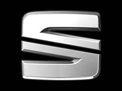
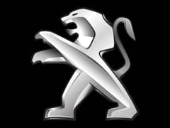
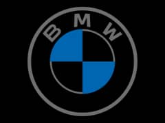
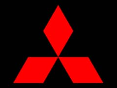
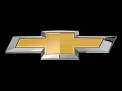
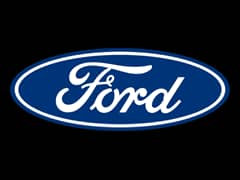
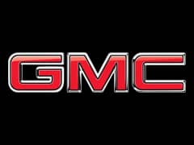
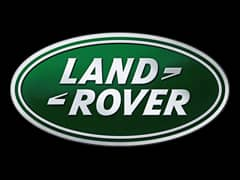

Reliable Transport of Crushed Cars, Engines, New Cars, and More
At Najeeb Ullah's Winch Services, we specialize in the safe and reliable transportation of heavy items, including crushed cars, engines, and new vehicles. With years of experience in the industry, Najeeb Ullah has built a trusted reputation for delivering top-notch service, ensuring that every item is transported securely and efficiently to its destination.
Whether you're looking to move a single car or need ongoing transportation for multiple heavy items, we are committed to providing the best solutions to meet your needs. Our fleet of well-maintained vehicles and professional drivers are ready to handle any load, big or small.
|  |  |  |  |  |  |  |  |
At Najeeb Ullah's Winch Services, we take safety very seriously. Our fleet of specialized vehicles is equipped to handle the transport of heavy items like crushed cars, engines, and new vehicles with the utmost care. To ensure that every load is secured properly, we use high-strength straps and chains to prevent any shifting during delivery.
We perform regular maintenance on all our vehicles to guarantee they are in peak condition, reducing the risk of any transportation issues. With a commitment to safe and efficient transport, you can trust us to get your goods to their destination securely.
For all inquiries or to book our transport services, please reach out using the contact details below:
Follow us on social media for updates and more:
Najeeb Ullah's Winch Services was founded with the vision of providing reliable, efficient, and safe transportation for heavy items, including crushed cars, engines, and new vehicles. With years of experience in the transport industry, Najeeb Ullah has built a reputation for delivering top-quality services, ensuring that every item reaches its destination securely and on time.
Our commitment to excellence is reflected in the careful handling of each load, the use of specialized equipment, and the professionalism of our experienced team. We understand the importance of timely and safe delivery, and we pride ourselves on offering the best transportation solutions to meet the needs of our clients.
Whether you're an individual needing to transport a single car or a business with ongoing transportation needs, Najeeb Ullah's Heavy Transport Services is here to provide trusted and efficient transport services in Kuwait.